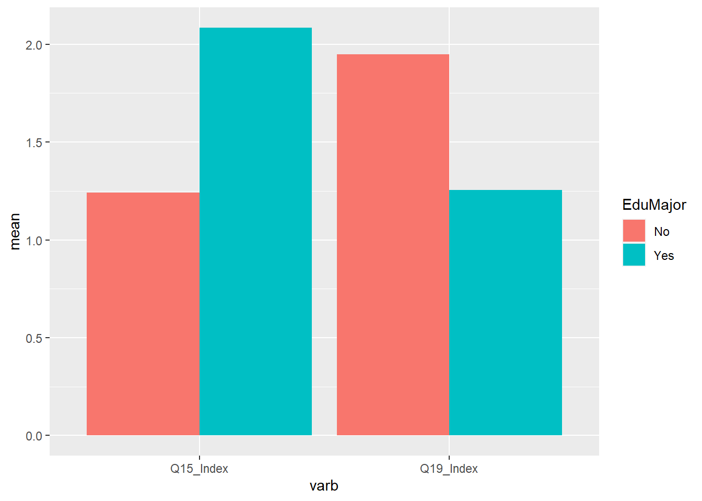
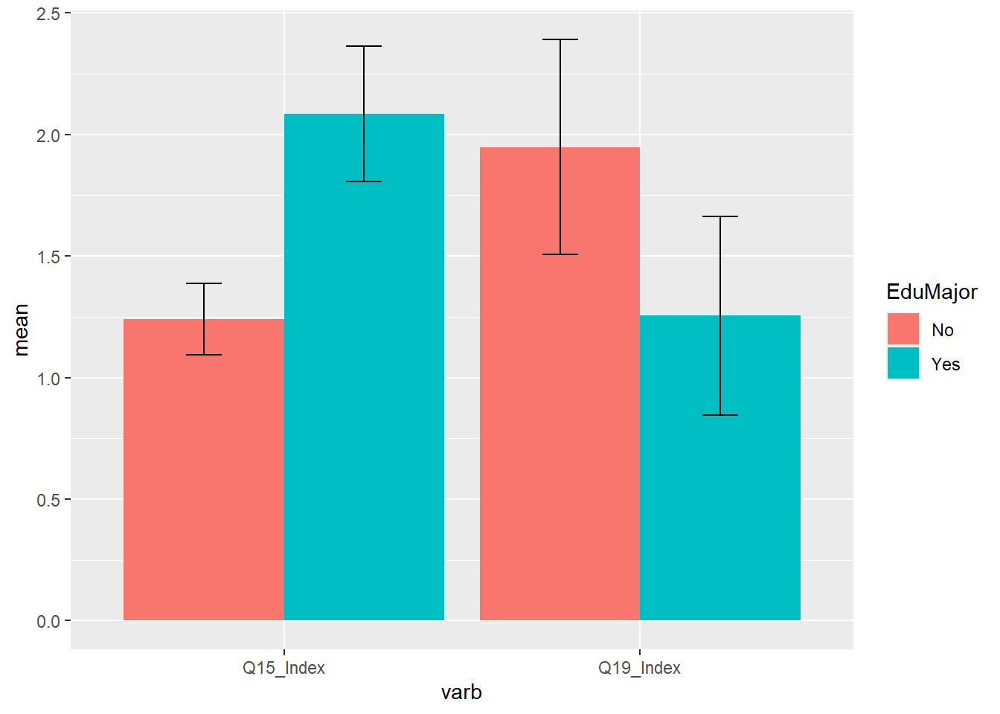
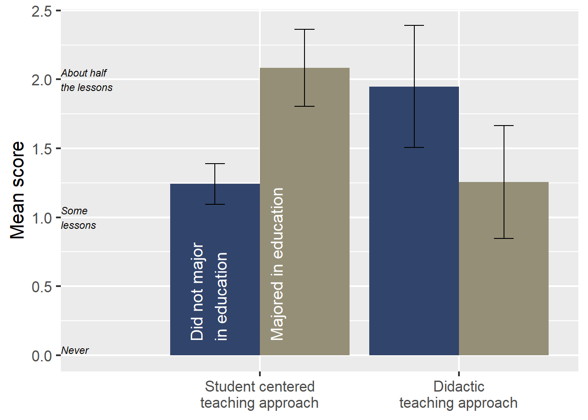

Part 5 Descriptive Statistics by Group
5.1 Using the describeBy() function
We can get descriptive statistics by group using the psych package’s describeBy() function. In this case, we are interested in two groups: whether the teachers majored in education or not. In this chapter, we will estimate these, export them to a report, and plot the by-group data for one of the variables.
In the previous chapter, we had created a factor using this code:
timss$Q6_Major_in_Edu_F <- factor(timss$Q6_Major_in_Edu,
levels = c(0,1),
labels = c("Not_education",
"Education") )We will use this column in the data frame as our by-variable.
We can see that the describeBy() function is very similar to the describe() function, except in its name and in the addition of the group = argument:
library(psych)
report2 <- describeBy(timss[,c("Q15_Index",
"Q16_Index",
"Q19_Index",
"Q13_NumSs",
"Q17_Mins")],
group = timss$Q6_Major_in_Edu_F)Let’s take a look at the output:
##
## Descriptive statistics by group
## group: Not_education
## vars n mean sd median trimmed mad min max range skew
## Q15_Index 1 13 1.24 0.24 1.29 1.27 0.21 0.57 1.57 1.00 -1.33
## Q16_Index 2 13 0.88 0.27 0.86 0.86 0.21 0.57 1.43 0.86 0.44
## Q19_Index 3 13 1.95 0.73 2.00 2.06 0.49 0.00 2.67 2.67 -1.44
## Q13_NumSs 4 13 25.77 4.71 26.00 25.64 4.45 18.00 35.00 17.00 0.09
## Q17_Mins 5 13 182.31 23.86 170.00 180.91 29.65 150.00 230.00 80.00 0.60
## kurtosis se
## Q15_Index 1.79 0.07
## Q16_Index -1.00 0.07
## Q19_Index 1.27 0.20
## Q13_NumSs -0.81 1.31
## Q17_Mins -0.87 6.62
## ------------------------------------------------------------
## group: Education
## vars n mean sd median trimmed mad min max range skew
## Q15_Index 1 17 2.08 0.54 2.00 2.10 0.42 0.86 3 2.14 -0.15
## Q16_Index 2 17 0.60 0.21 0.57 0.60 0.21 0.14 1 0.86 -0.29
## Q19_Index 3 17 1.25 0.80 1.00 1.20 0.99 0.33 3 2.67 0.55
## Q13_NumSs 4 17 21.12 5.78 21.00 21.47 7.41 8.00 29 21.00 -0.62
## Q17_Mins 5 17 202.35 30.73 200.00 203.33 29.65 150.00 240 90.00 -0.05
## kurtosis se
## Q15_Index -0.39 0.13
## Q16_Index -0.37 0.05
## Q19_Index -0.91 0.19
## Q13_NumSs -0.54 1.40
## Q17_Mins -1.48 7.455.2 Confidence intervals for each group’s estimated mean
For the by-group report, we can copy and paste the code we used in the previous chapter for the confidence intervals, but we have to do this separately with each group’s report. So, we need to separate the report into two data frames, estimate the confidence intervals, and then glue them (bind them) back together.
5.2.1 Separating the report by group
The output from the describeBy() function we used has “Not_education” and “Education” for the group. We use that to subset the data. For example, to get the descriptive statistics for those teachers who did not major in education, we use this code:
## vars n mean sd median trimmed mad min max range skew
## Q15_Index 1 13 1.24 0.24 1.29 1.27 0.21 0.57 1.57 1.00 -1.33
## Q16_Index 2 13 0.88 0.27 0.86 0.86 0.21 0.57 1.43 0.86 0.44
## Q19_Index 3 13 1.95 0.73 2.00 2.06 0.49 0.00 2.67 2.67 -1.44
## Q13_NumSs 4 13 25.77 4.71 26.00 25.64 4.45 18.00 35.00 17.00 0.09
## Q17_Mins 5 13 182.31 23.86 170.00 180.91 29.65 150.00 230.00 80.00 0.60
## kurtosis se
## Q15_Index 1.79 0.07
## Q16_Index -1.00 0.07
## Q19_Index 1.27 0.20
## Q13_NumSs -0.81 1.31
## Q17_Mins -0.87 6.62Here are the stats for teachers who did major in education:
## vars n mean sd median trimmed mad min max range skew
## Q15_Index 1 17 2.08 0.54 2.00 2.10 0.42 0.86 3 2.14 -0.15
## Q16_Index 2 17 0.60 0.21 0.57 0.60 0.21 0.14 1 0.86 -0.29
## Q19_Index 3 17 1.25 0.80 1.00 1.20 0.99 0.33 3 2.67 0.55
## Q13_NumSs 4 17 21.12 5.78 21.00 21.47 7.41 8.00 29 21.00 -0.62
## Q17_Mins 5 17 202.35 30.73 200.00 203.33 29.65 150.00 240 90.00 -0.05
## kurtosis se
## Q15_Index -0.39 0.13
## Q16_Index -0.37 0.05
## Q19_Index -0.91 0.19
## Q13_NumSs -0.54 1.40
## Q17_Mins -1.48 7.455.2.2 Calculating the confidence interval
Let’s start with the teachers who did not major in education. Also, notice that there is a new variable that we are creating called EduMajor. For this group, we set it to “No”.
library(dplyr)
report2_0 <- report2$Not_education %>%
mutate(EduMajor = "No",
LB_t = mean - qt(0.975, df = n -1)*se,
UB_t = mean + qt(0.975, df = n -1)*se,
varb = rownames(.)) %>%
data.frame() %>% # have to add this because the psych package messed up the format (described in the previous chapter)
select(varb, EduMajor, n, mean, sd, min, max, se, LB_t, UB_t)Now, for the education majors:
report2_1<- report2$Education %>%
mutate(EduMajor = "Yes",
LB_t = mean - qt(0.975, df = n -1)*se,
UB_t = mean + qt(0.975, df = n -1)*se,
varb = rownames(.)) %>%
data.frame() %>%
select(varb, EduMajor, n, mean, sd, min, max, se, LB_t, UB_t)We can stack these two data frames on top of each other with the rbind() function, which binds the rows together. We can do this because the two different data frames have precisely the same column names and types of data.
## varb EduMajor n mean sd min max
## 1 Q15_Index No 13 1.2417582 0.2431694 0.5714286 1.571429
## 2 Q16_Index No 13 0.8791209 0.2662805 0.5714286 1.428571
## 3 Q19_Index No 13 1.9487179 0.7308817 0.0000000 2.666667
## 4 Q13_NumSs No 13 25.7692308 4.7108712 18.0000000 35.000000
## 5 Q17_Mins No 13 182.3076923 23.8585576 150.0000000 230.000000
## 6 Q15_Index Yes 17 2.0840336 0.5417725 0.8571429 3.000000
## 7 Q16_Index Yes 17 0.5966387 0.2096845 0.1428571 1.000000
## 8 Q19_Index Yes 17 1.2549020 0.7952062 0.3333333 3.000000
## 9 Q13_NumSs Yes 17 21.1176471 5.7758371 8.0000000 29.000000
## 10 Q17_Mins Yes 17 202.3529412 30.7264975 150.0000000 240.000000
## se LB_t UB_t
## 1 0.06744305 1.0948125 1.3887040
## 2 0.07385291 0.7182092 1.0400326
## 3 0.20271011 1.5070506 2.3903853
## 4 1.30656060 22.9224798 28.6159818
## 5 6.61717328 167.8901103 196.7252744
## 6 0.13139912 1.8054799 2.3625873
## 7 0.05085596 0.4888288 0.7044485
## 8 0.19286584 0.8460446 1.6637593
## 9 1.40084626 18.1479857 24.0873085
## 10 7.45227027 186.5548339 218.1510484We can use the arrange() function from the dplyr package to order the data by their variables. This way we can see the estimates of each group on a particular variable in adjacent rows.
## varb EduMajor n mean sd min max
## 1 Q13_NumSs No 13 25.7692308 4.7108712 18.0000000 35.000000
## 2 Q13_NumSs Yes 17 21.1176471 5.7758371 8.0000000 29.000000
## 3 Q15_Index No 13 1.2417582 0.2431694 0.5714286 1.571429
## 4 Q15_Index Yes 17 2.0840336 0.5417725 0.8571429 3.000000
## 5 Q16_Index No 13 0.8791209 0.2662805 0.5714286 1.428571
## 6 Q16_Index Yes 17 0.5966387 0.2096845 0.1428571 1.000000
## 7 Q17_Mins No 13 182.3076923 23.8585576 150.0000000 230.000000
## 8 Q17_Mins Yes 17 202.3529412 30.7264975 150.0000000 240.000000
## 9 Q19_Index No 13 1.9487179 0.7308817 0.0000000 2.666667
## 10 Q19_Index Yes 17 1.2549020 0.7952062 0.3333333 3.000000
## se LB_t UB_t
## 1 1.30656060 22.9224798 28.6159818
## 2 1.40084626 18.1479857 24.0873085
## 3 0.06744305 1.0948125 1.3887040
## 4 0.13139912 1.8054799 2.3625873
## 5 0.07385291 0.7182092 1.0400326
## 6 0.05085596 0.4888288 0.7044485
## 7 6.61717328 167.8901103 196.7252744
## 8 7.45227027 186.5548339 218.1510484
## 9 0.20271011 1.5070506 2.3903853
## 10 0.19286584 0.8460446 1.6637593Now we have a report with a column that identifies the group. We can export this to a CSV file and then open it with our spreadsheet program to round the numbers to our preferred decimal places before we export it into our word processor’s table.
5.3 Plotting the by-group means and confidence intervals
Let’s create a plot of two variables side by side: Q15 and Q19, by whether they got their degree in education or not. First, let’s subset our data. We can use the filter() function from dplyr:
## varb EduMajor n mean sd min max se
## 1 Q15_Index No 13 1.241758 0.2431694 0.5714286 1.571429 0.06744305
## 2 Q15_Index Yes 17 2.084034 0.5417725 0.8571429 3.000000 0.13139912
## 3 Q19_Index No 13 1.948718 0.7308817 0.0000000 2.666667 0.20271011
## 4 Q19_Index Yes 17 1.254902 0.7952062 0.3333333 3.000000 0.19286584
## LB_t UB_t
## 1 1.0948125 1.388704
## 2 1.8054799 2.362587
## 3 1.5070506 2.390385
## 4 0.8460446 1.663759Now, we have a data frame of our report that contains only these two variables. Let’s use the ggplot2 package and a geom called geom_col, which makes columns and allows us to position groups’ scores adjacent to each other (with the position = "dodge" argument):
library(ggplot2)
ggplot(data = ForPlot, aes(x = varb, y = mean, fill=EduMajor)) +
geom_col(position = "dodge") 
Let’s add confidence intervals to the plot. The geom_errorbar() part of the code displays a band around the mean, which is the top of our bars. This allows us to eyeball whether the two groups are likely to be statistically different or not. Notice that we are using the lower bound and upper bound estimates that we had calculated earlier.
Myplot <- ggplot(ForPlot, aes(x = varb, y = mean, fill=EduMajor)) +
geom_col(width = 0.9, position = "dodge") +
geom_errorbar(aes(ymin = LB_t, ymax = UB_t),
position = position_dodge(0.9), width = 0.2)
Myplot
This plot says a lot. The two groups clearly differ on the Q15_Index. Their confidence intervals don’t overlap at all. On the Q19_Index, they might still statistically significantly differ. With 95% confidence intervals that overlap less than about 25%, we can still observe statistically significant difference.21
5.3.1 Making a pretty plot, maybe
The following code generates a plot that is more informative and perhaps more pleasing in format:22 Notice that the scale of the composite scores is the same as that used in the items. This helps us interpret the meaning of these composite scores. For instance, with the teachers who majored in education when they were in college, the estimated mean on the Q15 index is \(2.08\), which slightly more frequent than About half the lessons on the original Likert-type scale.
MyPretty <- Myplot +
theme_grey(base_size = 16) +
theme(axis.title.x.bottom=element_blank() ) +
scale_fill_viridis_d(option = "cividis", begin=0.2,end=0.6) +
ylab("Mean score") +
scale_x_discrete(labels=c("Student centered\nteaching approach",
"Didactic\nteaching approach")) +
guides(fill = FALSE) +
annotate("text", x = .65, y = 0.10, size = 5, color="white",
label = "Did not major\nin education",
hjust = 0, vjust=1, angle = 90) +
annotate("text", x = 1.05, y = 0.10, size =5, color="white",
label = "Majored in education",
hjust = 0, vjust=1, angle = 90) +
annotate("text", x = 0, y = 0, fontface="italic", size = 3,
label = "Never", hjust=0, vjust=-.2) +
annotate("text", x = 0, y = 1, fontface="italic", size = 3,
label = "Some\nlessons", hjust=0) +
annotate("text", x = 0, y = 2, fontface="italic", size = 3,
label = "About half\nthe lessons", hjust=0)
MyPretty
5.3.2 Saving plots
We can save plots to objects and then export them to .png or .pdf formats. The image, in .png format, is easy to paste into a word processor slide show for your report:
Note that it is a misconception that statistically significant different results only occur when confidence intervals do not overlap. Nope. Not true.↩︎
The viridis color palette is included in this plot. Viridis color pallettes are designed to be a little more accessible to people with colorblindness.↩︎